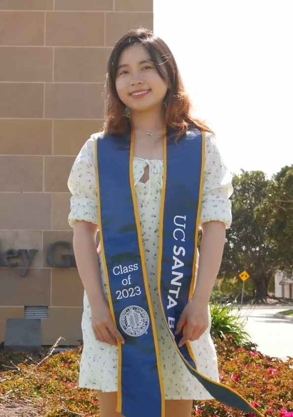

Exoplanet Astronomer · University of Michigan
Welcome
I detect and characterize planets around other stars, combining radial velocity, astrometry, and direct imaging to map worlds we can't yet see directly.
Scroll ↓
About
I graduated from the Pennsylvania State University in 2018 with simultaneous B.S. degrees in Astronomy & Astrophysics, Mathematics, and Physics. There, I worked with Dr. Guðmundur Stefánsson and Dr. Suvrath Mahadevan on near-infrared Doppler instrumentation and precision transit photometry to detect exoplanets, and dabbled in gravitational wave research along the way.
Afterwards, I moved to sunny Southern California, where I completed my Ph.D. in Physics at the University of California, Santa Barbara in 2023. My thesis, advised by Dr. Timothy Brandt, focused on using stellar accelerations as a novel target-vetting method to directly image exoplanets and characterize their orbits and dynamical masses. I'm an observer with experience on ground-based extreme adaptive optics systems, as well as space-based instruments like ESA's Gaia and NASA's James Webb Space Telescope.
Today I'm a postdoctoral researcher in the FEPS research group at the University of Michigan, Ann Arbor, where I use JWST observing programs and multi-institution collaborations to study how planets and brown dwarfs form and evolve, and to build a clearer statistical picture of exoplanet demographics in the solar neighborhood.

Research
Since the first confirmed exoplanet, over 5,800 worlds have been found around other stars, detected through astrometry, radial velocity, transit, microlensing, and direct imaging. My work pushes on these techniques to find and characterize new systems, building toward a statistical picture of how planets form across the galaxy.
Built two near-infrared fiber-fed precision radial velocity spectrographs (HPF and NEID), plus novel beam-shaping diffusers to improve ground-based photometric precision.
Read the paperCo-led the first diffuser-assisted transit follow-up of the Neptune-sized planets K2-100b and K2-28b, using precise ground-based photometry for timely TESS-era TOI follow-up.
Read the paperorvara is an orbit-fitting package for precise 3D Keplerian orbits from arbitrary combinations of radial velocity, direct imaging, and stellar acceleration data.
Targets stars with Hipparcos–Gaia proper-motion anomalies to improve the yield of direct-imaging searches for nearby exoplanets and brown dwarfs.
Read the paperModeling the evolution and atmospheres of brown dwarfs, substellar objects with masses between stars and planets.
Working toward a comprehensive statistical model of how exoplanets and brown dwarfs form and settle into diverse system architectures.
Projects
A mix of research software and side projects: some for the research, some just for fun.
Open Source
Orbit-fitting package for combining radial velocity, direct imaging, and astrometric data into precise Keplerian orbits.
View codeFun Project
A daily arXiv digest: auto-curated astro-ph papers, delivered fresh every morning.
Visit PrismAdd Yours
Another card, ready for your next project: code, a tool, a data viz, whatever you want to show off.
Add linkBlog
Occasional posts on research, telescopes, and whatever else comes up.
Questions about the research, collaboration ideas, or just want to talk about exoplanets? Reach out.